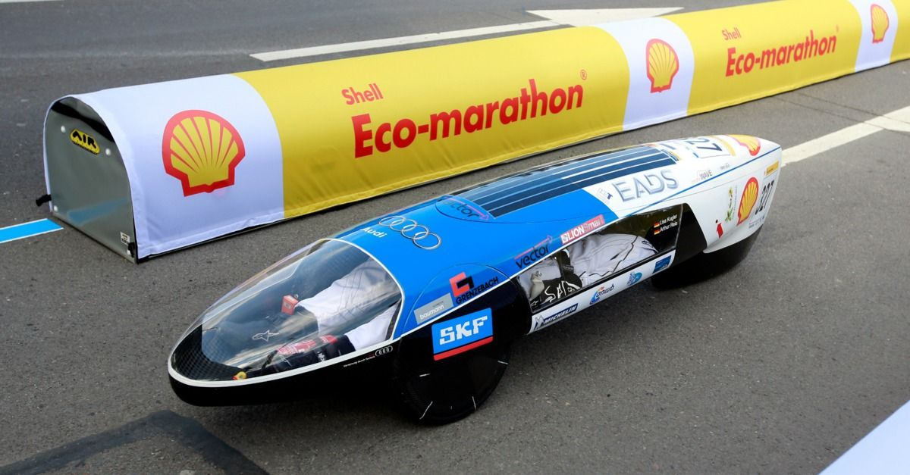
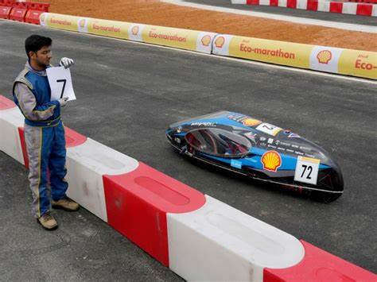

Team Eta is a student team that participates annually in the Shell Eco-Marathon. Shell Eco-marathon is one of the world’s leading energy efficiency competition programmes. Students are challenged to design, build and test energy-efficient cars, pushing the boundaries of what is technically possible.

To build a fuel efficient vehicle to combat current problem and create a sustainable future for coming generations.
We are Eta, a compassionate group of young engineers who believe in bringing a change to the traditional conventions followed in today's automobile industry leading to a carbon neutral Earth.
We are Eta, a compassionate group of young engineers who believe in bringing a change to the traditional conventions followed in today's automobile industry leading to a carbon neutral Earth.
~Our Vision

ABOUT US
It all started in 2013, when a group of students from K.J. Somaiya College of Engineering felt the need to use their technical knowledge and management skills to develop and innovate technology for the benefit of mankind. That is when, they all came together as Team ETA with a goal of providing a sustainable future to the world using technological innovations to achieve mileage in numbers that appeared to be just a dream for the current world.
Since then, the team worked tirelessly with the utmost commitment, dedication and countless of sleepless nights, to develop and be the proud makers of Jugaad, J-14, Arya, Triton, Mahil and Yugant prototypes.
Since then, the team worked tirelessly with the utmost commitment, dedication and countless of sleepless nights, to develop and be the proud makers of Jugaad, J-14, Arya, Triton, Mahil and Yugant prototypes.
23
TEAM MEMBERS
TEAM MEMBERS
6
CARS DESIGNED
CARS DESIGNED
6
AWARDS WON
AWARDS WON
1
NATIONAL EVENT WON
NATIONAL EVENT WON
1
INTERNATIONAL EVENT WON
INTERNATIONAL EVENT WON
Remaining same as previous website